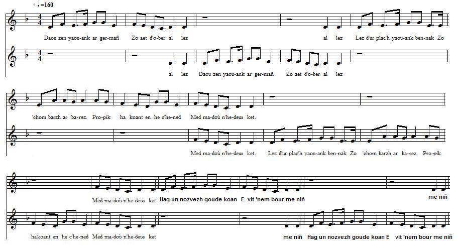

1° Daou zen yaouank
Deux jeunes gens
Two young people
Chant collecté par Théodore Hersart de La Villemarqué
dans le 1er Carnet de Keransquer (p. 211).

Mélodie
Arrangt Christian Souchon (c) 2015
|
A propos de la mélodie Mélodie inconnue, remplacée ici par "Daou zen yaouank o vale" tiré de "Fiselezed Groñvel", chansons de Kan ha diskan recueillies par Fañch Danno auprès de deux dames de Grommel, Catherine Baquer et Yvonne Goff. Publié en 1996 par Ar skol vrezhoneg, 40 rue de la République, 29200 Brest et reproduit sur le site "Son ha Ton" de M. Pierre Quentel (cf. liens) La partition ci-dessus illustre le procédé du "kan-ha-diskan", ce tuilage de deux parties chantées propre à la Basse-Bretagne. A propos du texte Un texte similaire et plus complet a été recueilli 2 fois par J.-M. de Penguern: . Tome 89: "Ar minor hag ar vinores", Taulé 1851 et publié dans la revue Gwerin 5; . Tome 90: "Ar minor hag ar vinores", Henvic 1851. C'est le chant N°2 ci-dessous. Dans le premier chant ci-après, les mots en italiques tentent de suppléer à des lacunes de l'original. L'interprétation qu'ils induisent n'est qu'une hypothèse. Dans le second chant, on donne à "minour" et "minourez" les sens d'orphelin et d'orpheline du père uniquement. |
About the tune Tune unknown, replaced here with "Daou zen yaouank o vale" from "Fiselezed Groñvel", "Kan ha diskan" songs collected by Fañch Danno from the singing of two Grommel ladies, Catherine Baquer and Yvonne Goff. Published in 1996 by "Ar skol vrezhoneg", 40 rue de la République, 29200 Brest and copied onto his site "Son ha Ton" by M. Pierre Quentel (see. links) The sheet above illustrates the "Kan-ha-diskan" singing device peculiar to Lower-Brittany. About the lyrics Similar and more complete lyrics were collected twice by J.-M. de Penguern: . MS 89: "Ar minor hag ar vinores", Taulé 1851, published in the periodical "Gwerin" 5; . MS 90: "Ar minor hag ar vinores", Henvic 1851. It is the second song hereafter. In the fire song below, the words in italics are an attempt to supply lacking words in the original. The interpretation suggested by them is not ascertained. In the second song, "minour" and "minourez" are understood as applying to a child left orphan by father. |
|
BREZHONEK p. 211 1. Daou zen yaouank ar ger-mañ Zo aet d'ober al lez (div w.) D'ur plac'h yaouank bennak Zo 'chom barzh ar barez. Propik ha koant en he c'hened Med madoù n'he-deus ket. (div w.) 2. Hag un nozad goude koan Evit 'n-em diduiñ, (div w.) Me gemeras va fenn-bazh Vit mont betek he zi. Hag an noz oa kriz ha yen, Ha me da vonet d'he c'hichen. (div w.) 3. Hag en ur farsal outi Me bilas he gwerzhin, (div w.) Hag en ur bouchad dezhi Me bilas he hinkin Ar plac'h a oa fur ha koant A gomañs da barlant: (div w.) 4. - Na soñjit ket! Kement-se A gousto ugent skoed! - (div w.) Hag epad un eizhtez A oa ganin fachet. Me gave hir an amzer Heb monet d'he gweled. (div w.) 5. Me a ray de(zh)i ul lizer Ha hi dont d'am gweled. (div w.) - 'M eus ket afer ac'hanoc'h Abalamour d'ho mamm. - Pa ho glevan o parlant, Va c'halonik a rann, - Gwell eo ganin koll ugent skoed Ha c'hwi ganin chomet. - KLT gant Christian Souchon. |
TRADUCTION FRANCAISE p. 211 1. Deux jeunes gens de ce bourg Tissent des liens tendres (bis) Jeunes voisins que l'amour Invite à s'entendre. Si la fillette est bien faite, Hélas, elle est pauvrette. (bis) 2. Un beau soir, après avoir Vidé mon écuelle, (bis) Avec mon penn-bazh je pars Voir la demoiselle. Il gelait à pierre fendre. Elle s'est montrée tendre. (bis) 3. Alors que je badinais, Tombe sa quenouille (bis) Je tente de l'embrasser: La laine s'embrouille. Belle et sage, elle me tance: Une âpre remontrance. (bis) 4. - Y pensez-vous? Quel dégât! Vingt écus, je pense!- (bis) Pendant huit jours elle m'a Boudé! La malchance! Tout ce temps, elle n'a pas Toléré ma présence. (bis) 5. Ecrire est, pour la revoir, Ce qu'il me faut faire. (bis) - Celle qui m'a peint en noir C'était votre mère! - Ma belle eut des mots très doux Qui mon cur réchauffèrent: - Vingt écus! Je suis à vous! Une splendide affaire! - Traduction: Christian Souchon (c) 2015 |
ENGLISH TRANSLATION p. 211 1. Two young people in this town Are flirting together. (twice) In the parish lives the young Girl to whom I refer. Neat and tidy, but alas Broke to the wide, that lass! (twice) 2. After dinner th'other night, Of her presence bereft (twice) I took my staff and outright To visit her I left. 'T was as cold as witch's teat Being with her! What a treat! (twice) 3. But in a mood to banter, I knocked off her spindle. (twice) And an attempt to kiss her Caused the skein to tangle. That girl is as earnest, as fair: I'm in for a lecture! (twice) 4. - Of my work you spoiled the bulk! Twenty crowns to mend it!- (twice) A week or so she did sulk She was indisposed. For an everlasting time I atoned for that crime. (twice) 5. To make her come back to me, I must write a letter: (twice) - If I find fault, it's only With your talky mother! - When I listen to your tweet My heart melts: it's so sweet! I would rather loose twenty Crowns than you, I prefer! - Translated by Christian Souchon (c) 2015 |
2° Ar minor hag ar vinorez
L'orphelin et l'orpheline
The orphan boy and the orphan girl
Chant collecté par Jean-Marie de Penguern
Tome 90: Chanté par Jeanneton Puil, Henvic, 16 juin 1851.
|
BREZHONEK 1. Ur minour deus ar ger-mañ Zo aet d'ober al lez Da ur vinourez yaouank Deus a-gichen Montroulez. 2. Un devezh goude koan E kemeras e vazh. Etrezek ti e vestrez En ur bourmen ez eas. 3. Pa oa erruet kichen an nor E c'houlenne digor. Digoret e oa dezhañ Antreiñ a ras en ti. 4. Pa antreas e-barzh an ti E voar o tijuniñ. E vestrez a oa e nesañ; E pedas d'asezañ, D'asezañ en he c'hichen: An amzer a oa yen. 5. En avis farsal outi Diskaras he gwerzhit, Hag hi o sevel promtamant, Gant un aer diferant. - N'eo ket red d'eoc'h bezañ ker diferant Evidoc'h bezañ koant. 6. Ker koant a c'hwi a zo er vro, Mar garan, em-bezo. Maoc'h partoud o lavared Em-eus ho goulennet. 7. N'em-eus ket afer ac'hanoc'h Abalamour d'ho mamm: Ema partoud o lavared Em-eus ho goulennet. 8. N'em-eus ket ho goulennet Na ho goulennin ket. Me dennfe kentoc'h blev va fenn Kent deufen ho goulenn. 9. - En añv Doue, den yaouank, Blev ho penn na tenit ket! C'hwi kavo, me ray ivez P'hor-bezo bolontez...- KLT gant Christian Souchon. |
TRADUCTION FRANCAISE 1. Un orphelin de ce village Est allé faire sa cour A une jeune orpheline Du côté de Morlaix. 2. Un jour après dîner Il a pris son bâton. En direction de la maison de son amie Il est parti se promener. 3. Quand il passa devant sa porte, Il demanda à entrer. On lui ouvrit Et il entra dans la maison. 4. Quand il entra dans la maison On finissait de diner Son amie était la plus proche. Elle le pria de s'asseoir Tout près d'elle: Il faisait grand froid. 5. Par manière de plaisanterie Il fit tomber son fuseau. Elle se leva promptement Avec un air de défiance. - Cet air de défiance ne vous sied pas, Même si vous êtes jolie. 6. D'aussi jolies que vous il y en a par ici. Si je veux, j'en trouverai. Même si vous racontez partout Que j'ai demandé votre main. 7. Ce n'est pas à vous que j'en veux La faute est à votre mère. C'est elle qui raconte partout Que j'ai demandé votre main. 8. Je n'ai pas demandé votre main Et je ne la demande pas. J'arracherais les cheveux de ma tête Plutôt que venir faire ma demande. 9. - Pour l'amour de Dieu, jeune homme, Ne touchez pas à vos cheveux! Vous trouverez (à vous marier), moi aussi Si nous y mettons de la bonne volonté... - |
ENGLISH TRANSLATION 1. An orphan in this town Has gone to woo A young orphan girl Not far from Morlaix. 2. One day, after dinner He took his staff. Towards the house of his sweetheart He went out to stroll. 3. When he was before her door He asked for admittance. They opened to him He entered the house. 4. When he entered the house They were finishing dinner. His sweetheart was nearest; She asked him to sit down, To sit down next to her: It was icy cold. 5. By way of joke He knocked off her spindle. She leapt to her feet, With a defying air. - No use for you to be so defying In spite of your good looks. 6. There are other pretty girls around here, If I choose, I'll find one. You may tell everywhere That I proposed to you. 7. I am not cross with you But with your mother: All everywhere she says That I have proposed to you. 8. I did not Nor do I intend to. I'd rather tear all my hair out Than propose to you. 9. - In God's name, young man, Leave your hair alone! You'll find (a match) for you? So will I It's just a matter of good will...- |